Case study / IQVIA
Orchestrated Customer Engagement
A pharmaceutical sales rep gets a couple of minutes in a physician's doorway, and everything they write down afterward becomes a regulated record. I led the UI design for the iPad CRM they do it in, from requirements and flows all the way to the shipped product.
- Role
- UI design lead, team of five
- Client
- IQVIA
- Platform
- iPad, field-first
- Users
- Sales reps, MSLs, account managers, admins
- Partners
- Product management, engineering, visual design
- Shipped
- December 2017, into 130+ countries
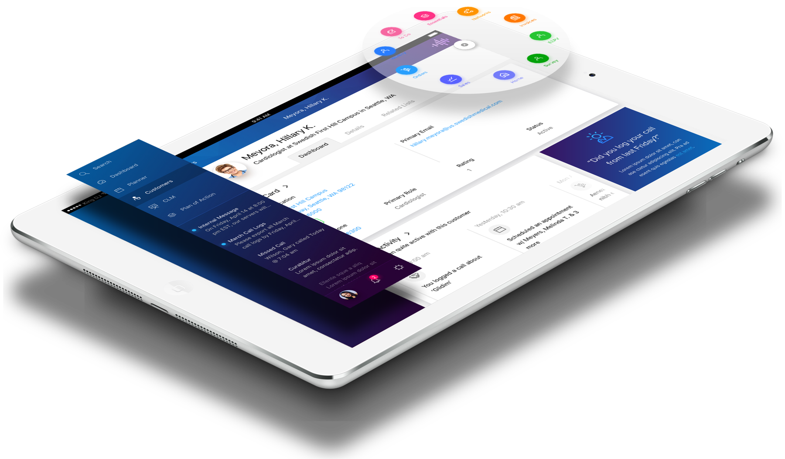
The shipped product. Customer dashboard, module launcher, and a nudge to finish a call the rep started on Friday.
The problem
Most field software in life sciences gets built so the company can pass an audit, which is a real need. Samples count against limits. Meetings need sign-off from several people. Every rejection and cancellation has to record who did it, when, and why. The trouble was that the old tools made the rep carry all of it, so calls got written up from memory hours later, or skipped.
Product management put the goal in one line at the top of the flow document: more efficient calls. Having something to design against changes how you read a requirements list. If a screen added a tap and didn't make the rep any more certain about anything, it was pulling the wrong way.
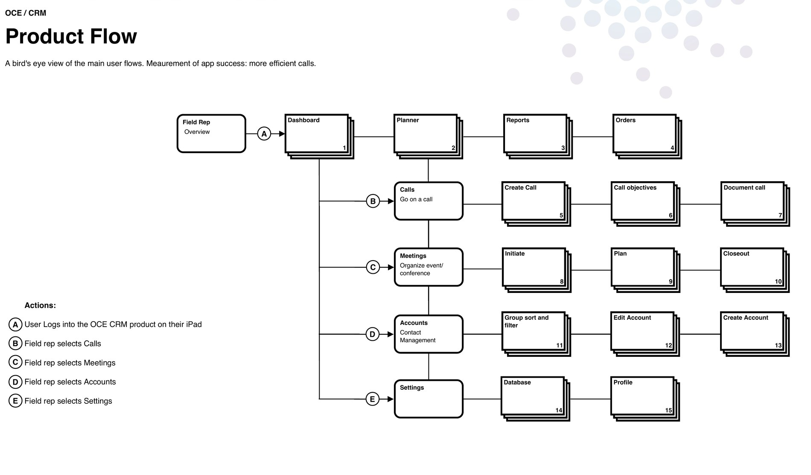
Where the app sat
The field app was the top layer of something much bigger, and it helped to keep that picture in front of me. Underneath the interface sat the AI layer, then a platform stitching Salesforce, master data management and the customer profile together, then the infrastructure, then the data itself.
Two things came out of that. The suggestions showing up in the interface came from the AI layer, so I had to understand what it could and could not actually tell a rep before deciding how to show it. And the roles across the top are the same personas the meeting spec was written against, which meant one shell had to work for marketing, sales, market access, medical affairs and the home office.
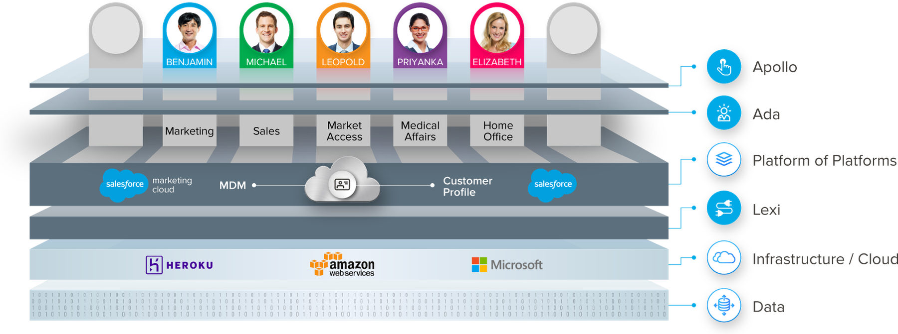
What I was handed
Product management gave me requirements and use cases, not screens. For the meetings work that meant five personas and seven user stories, written as plain statements of what each role must be able to do.
It took me a while to work through them, because the roles overlap in a way the list doesn't show. A sales rep can organize a meeting. So can a medical science liaison, an account manager, or a consumer health sales rep. Account managers usually do the approving. And the same person can be the organizer on one meeting and the approver on the next. So the interface can't work off anyone's job title. It has to work off their role in the meeting in front of them.
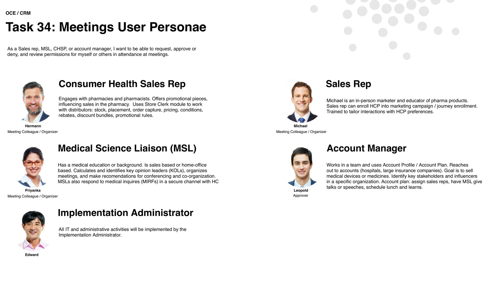
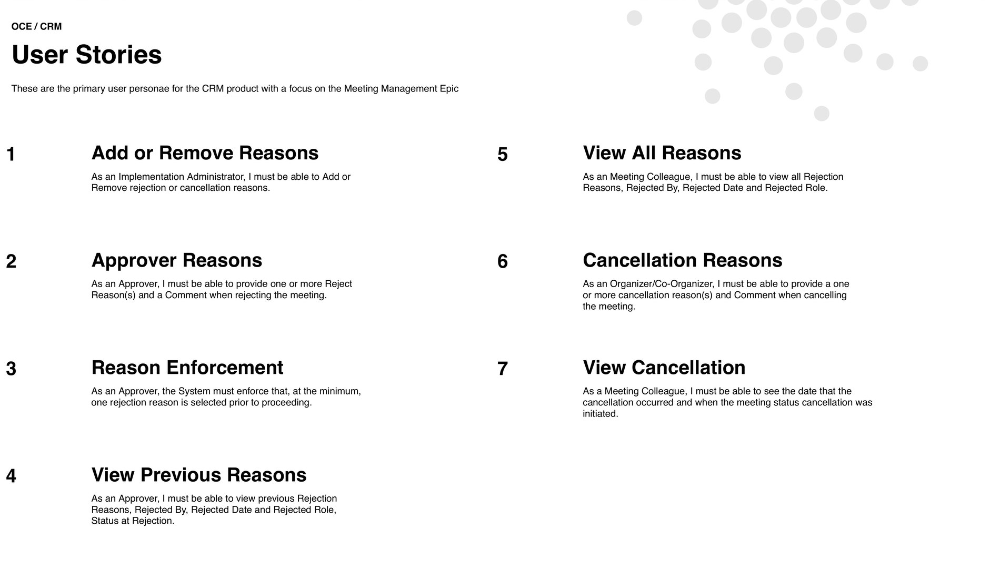
The decisions
Turn the list of stories into a map
A list of seven stories reads like seven small jobs. Once I drew them as a map, the rules between them turned up. A meeting can be rejected more than once, by different approvers, sometimes for the same reason. A cancellation happens once and that is that. Rejection reasons travel from the approver's account to the organizer's, and cancellations go out to everyone who was invited.
Not one of those rules was written down in the stories, and every one of them changes what you build. So the first thing I made was the epic map, with the system's own steps lettered next to the user's and the rules spelled out beside it, somewhere product, engineering and I could argue about them together.
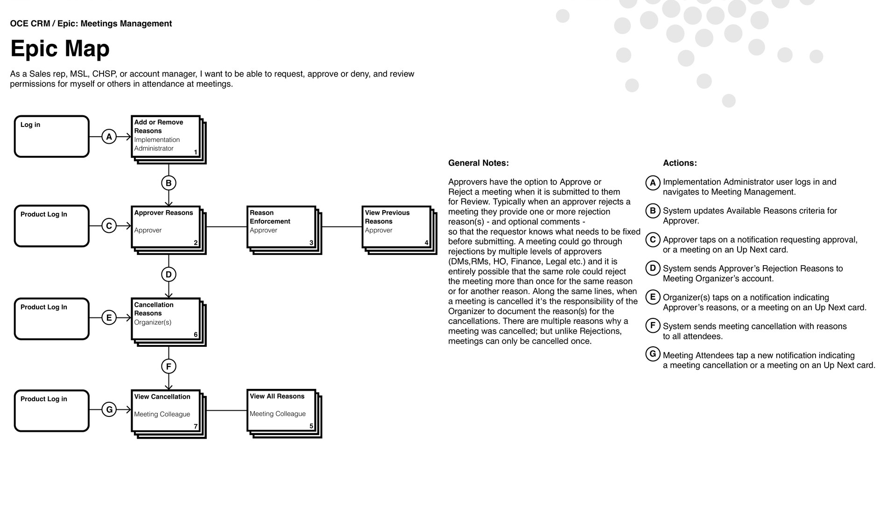
Give every story its own screen-by-screen flow
Then every story got drawn out as a sequence, with the screens numbered and the actions lettered. Rejecting a meeting turns out to be six steps: meeting preview, details tab, actions drop-down, review meeting, reasons drop-down, confirmation. Once it is written like that, an engineer can size it without having to come and ask me anything.
The numbers earned their keep twice over. QA could walk 2.1 through 2.6 as a test script, and a support ticket could say "breaks at 3.5" instead of trying to describe a screen. People were still using those numbers long after I had moved on to something else.
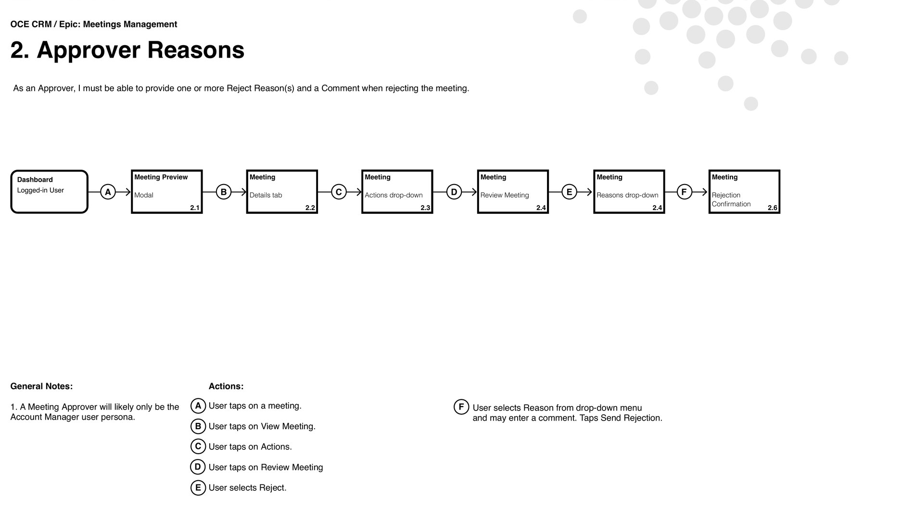
Wireframe in grey, and design the error at the same time as the happy path
Every screen in the flow got a wireframe with the taps numbered in order. Grey boxes keep everyone talking about what a screen is for instead of what the button should look like, and moving a box costs nothing.
Working that way also meant I designed the failure at the same time as the success. One line in the requirements said the system has to enforce at least one rejection reason. In practice that is two more screens: the error telling the approver what is missing, and the confirmation telling them it reached the organizer. Both got drawn in the same pass, so neither turned up late as a patch.
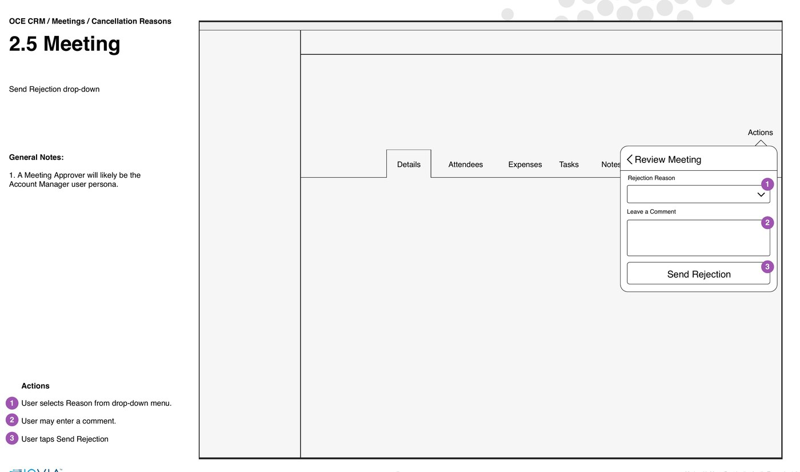
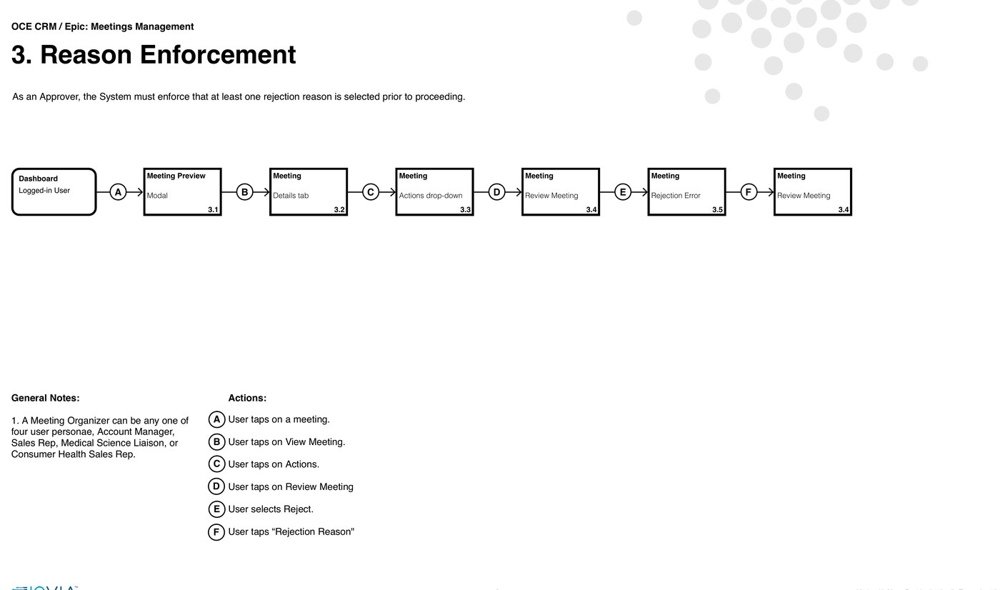
Design the record, not just the transaction
One rejection is rarely the whole story. A meeting can bounce between district managers, regional managers, home office, finance and legal, and the organizer needs to see that entire chain before they can fix anything. So the history is a sortable table of every transaction: what happened, who did it, when, what they said, and the status it moved from and to.
People get there from two directions, so I built two routes in. If you are already looking at the meeting, it is a tab. If you saw the notification first, tapping it takes you straight in. Cancelled meetings drop off the planner but stay in the notification drawer, so nothing just quietly vanishes.
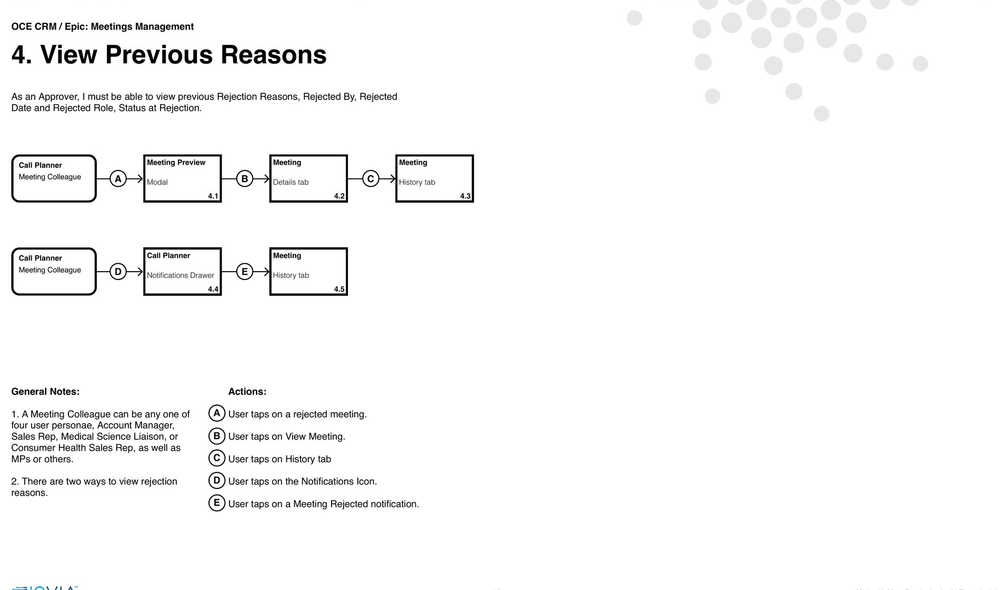
Leading the work
I led a team of five UX/UI designers, split by surface. Most of that job is not critiquing screens. It is keeping five people's instincts pointed in the same direction, which is really why the documents above all look alike. Anyone on the team could pick up an epic and already know what a finished spec was supposed to contain.
I worked directly with engineering and the product managers through implementation as well, because on a product like this a requirement that ships slightly wrong is a compliance bug, not a cosmetic one. And I sat with the visual design team so the product read as the same brand as the marketing around it.
Consistency at this scale is a coordination problem before it's a design problem.
What engineering got
The specs were only half of what I handed over. The other half was the UI guidelines: named color tokens, a type scale running from a 40px headline down to an 11px caption with every step labelled, an icon font, and a worked example of the layout.
The naming is what makes it useful. If an engineer is building against $color-theme-neptune and headline-2, Semibold 32px, changing the ramp changes everything at once, and nobody has to eyedrop a comp to work out which blue this is.
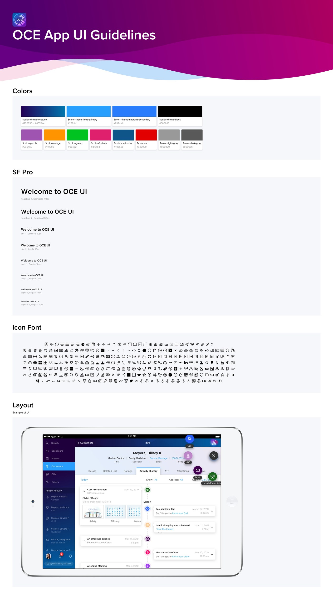
The result
Every surface is built the same way underneath. The left rail never moves, the notification drawer is always one tap away, and the middle changes without the rep losing track of where they are.
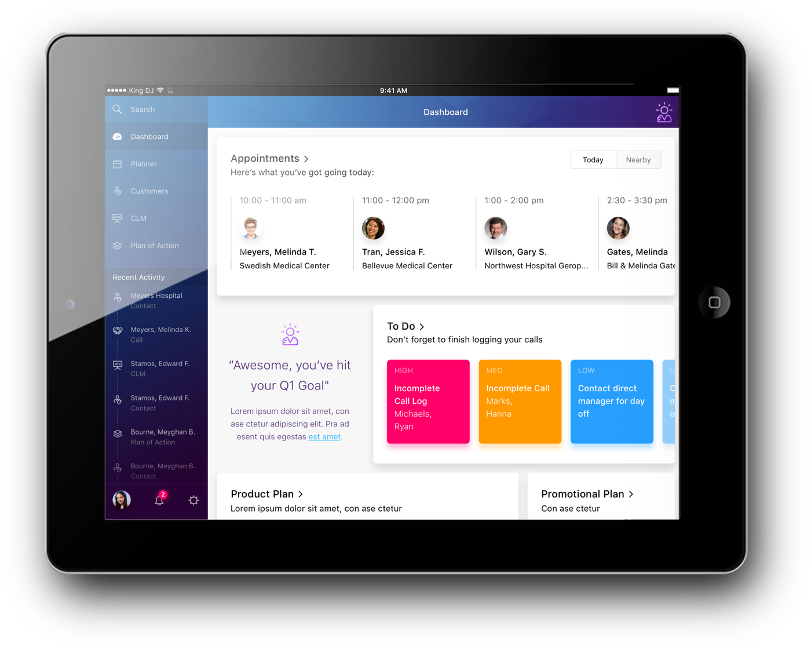
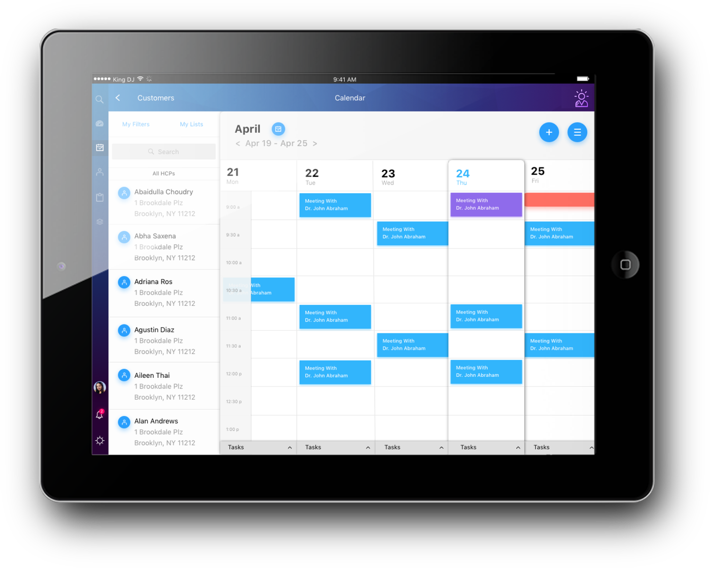
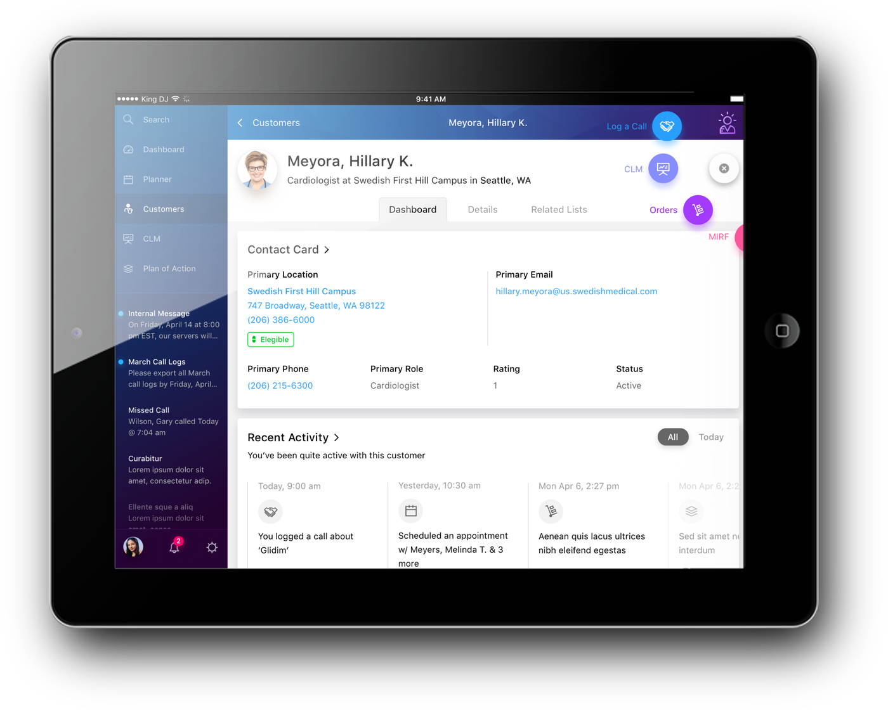
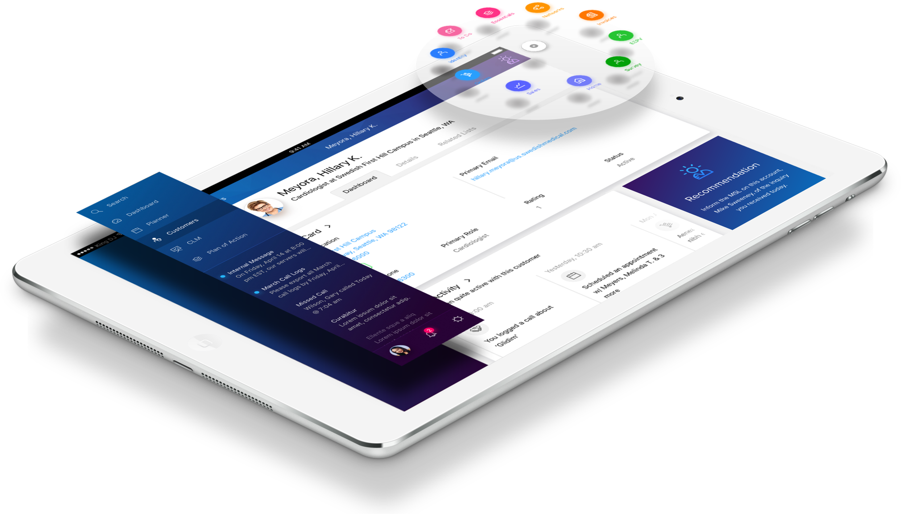
How it landed
OCE launched on 12 December 2017. Within twelve months more than thirty life sciences companies had picked it up, Novo Nordisk and Roche among them, and it was running in 115 countries. By 2024 it served close to 400 enterprise customers across more than 130.
That reach is the reason for working this way. Approval chains, reason lists and enforcement rules do not match up between Japan, Germany and the United States. Because each of them was written as a rule hanging off a shared pattern instead of drawn as a fixed screen, a market with a different chain gets a different list and the same product.
In April 2024 IQVIA licensed the OCE CRM software to Salesforce, which folded it into Salesforce Life Sciences Cloud, and committed to supporting existing OCE customers through 2029. So the work ended up outliving the product it was built for. That does not happen often.
The thing I took away from it: the hard part was never getting the rules onto a screen. It was working out which ones a person should have to remember. Usually the answer was none.
Launch and adoption figures from IQVIA's January 2019 adoption release and its April 2024 Salesforce partnership announcement. Specs, wireframes, guidelines and screens are my own project files. Product screens use fictional accounts, physicians and products.